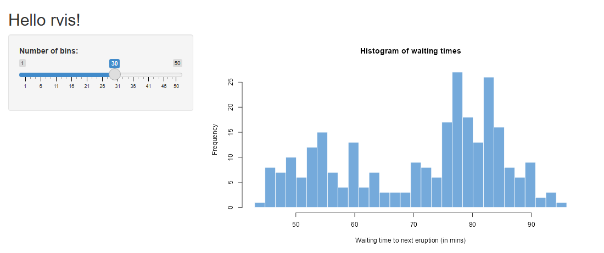

rvis does two things:
-
Charts with one calling convention.
rvisPlot()draws interactive charts with about 30 plotting packages (htmlwidgets like echarts4r, highcharter, plotly, apexcharter, visNetwork or DT), always with the same arguments: the data, the columns to show, and a list of settings. Changing the package that draws a chart is changing one word. -
Shiny dashboards from a configuration.
rvisDashboard()builds a complete shiny app from a YAML (or JSON) file or an R list naming its inputs, outputs, containers and layout, with the R code of its outputs. Clicks on chart items can be inputs of the dashboard.
This page takes you from installation to your first chart and your first dashboard, and shows where to go next.
Installation
rvis is installed from GitHub. It needs package rutils, also on GitHub, which is installed with it:
# install.packages("remotes")
remotes::install_github("genpack/rvis")The plotting packages are optional: install the ones whose charts you want to use. Each chart of the chart guides names the package it needs. The packages on CRAN:
install.packages(c("echarts4r", "apexcharter", "highcharter", "plotly", "billboarder", "c3",
"dygraphs", "rAmCharts", "googleVis", "networkD3", "visNetwork", "DiagrammeR",
"DT", "rpivotTable", "leaflet"))For dashboards, install shiny and shinydashboard (and, for the features that use them, shinyWidgets, shinyBS, shinyjs, rintrojs, shinythemes, yaml and jsonlite):
install.packages(c("shiny", "shinydashboard", "yaml", "shinyWidgets", "shinyBS", "shinyjs", "rintrojs", "shinythemes"))A few plotters use packages which are only on GitHub, like rCharts
(remotes::install_github("ramnathv/rCharts")), D3plusR
("paulofelipe/D3plusR"), streamgraph
("hrbrmstr/streamgraph") or sankeytreeR
("timelyportfolio/sankeytreeR"). The plotter list shows every plotter with
its package.
Your first chart
rvisPlot() takes the chart type, the
plotter (the package drawing it), the data
obj, the columns of the dimensions of the chart (here
x and y) and a config list of
settings:
library(rvis)
deaths <- data.frame(age = rownames(VADeaths), VADeaths, check.names = FALSE)
rvisPlot(type = "bar", plotter = "echarts", obj = deaths,
x = "age", y = list("Rural Male", "Urban Male"),
config = list(title = "Death rates in Virginia (1940)", yAxis.label = "per 1000"))Several series are given as a list of columns, like
y = list("Rural Male", "Urban Male"). The same call draws
the chart with another package by changing plotter:
rvisPlot(type = "bar", plotter = "apexcharter", obj = deaths,
x = "age", y = list("Rural Male", "Urban Male"),
config = list(title = "Death rates in Virginia (1940)", yAxis.label = "per 1000"))The charts are htmlwidgets: they are shown in the RStudio viewer, in R Markdown and Quarto documents, and in shiny apps (with the output and render functions of their package).
Your first dashboard
A dashboard is a list of named items, inputs,
outputs and containers, and a layout naming the item
that makes the page. Outputs have a service: the R code
of their content, run again when an input it uses changes. Save this as
hello.yml:
name: Hello rvis
layout: page
items:
page:
type: sidebarLayout
title: Hello rvis!
layout.side: [bins]
layout.main: [hist]
bins:
type: sliderInput
title: "Number of bins:"
min: 1
max: 50
value: 30
hist:
type: plotOutput
service: |
x <- faithful$waiting
hist(x, breaks = seq(min(x), max(x), length.out = input$bins + 1),
col = "#75AADB", border = "white", main = "Waiting times")and run it:
runDashboard("hello.yml")
This example comes with rvis. 40 example dashboards do, from single
features to complete apps: rvisDashboardExample() lists
them, and runDashboard(rvisDashboardExample("hello")) runs
one.
head(rvisDashboardExample()[, c("name", "group", "title")], 10)
#> name group title
#> 1 charts basics rvis charts
#> 2 click-events basics Click events
#> 3 clothes basics Clothes
#> 4 dynamic basics Dynamic interface
#> 5 generic-types basics Generic item types
#> 6 hello basics Hello rvis
#> 7 inputs basics Input items
#> 8 layout-grid basics Layout grid
#> 9 login basics Login
#> 10 modals-tooltips basics Modals and tooltipsCharts of rvis are dashboard outputs too, and any function of any
package can be an item, written as package::function:
Where next
Learn the charts
-
Plotting basics: the arguments of
rvisPlot(), several series, settings. - The chart guides, with an example of every chart type drawn by every plotter, each on one R data set: comparing categories (bar, line, area, radar, combo), parts of a whole (pie, funnel, pyramid, gauge, bullet, word cloud), relationships and distributions (scatter, bubble, histogram, box, heat map), time series (line, area, bar, stock, calendar), networks and hierarchies (graph, sankey, sunburst, tree, treemap) and tables (interactive, filterable and pivot tables).
- Configuration reference: every setting of every plotter.
- Interactive charts: clicks in shiny: clicks on nodes, bars and points as inputs.
Build dashboards
- Dashboards: getting started, then layouts, the item reference and the Shiny packages usable in dashboards.
- Gallery: the apps of the Shiny gallery rebuilt from YAML, and two large showcase dashboards.
Find an example
- Examples and galleries: an index of all chart examples and example dashboards.
Look something up